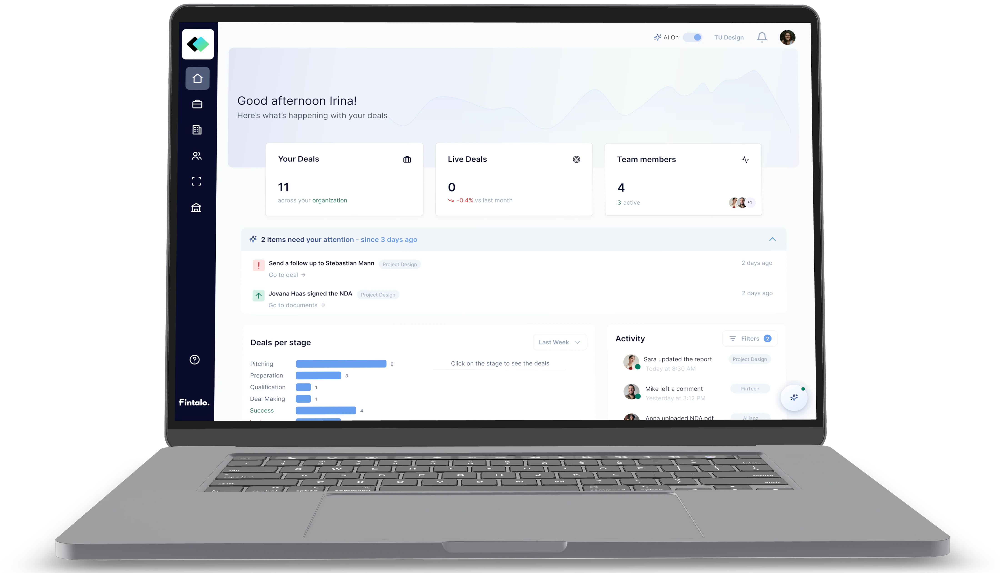
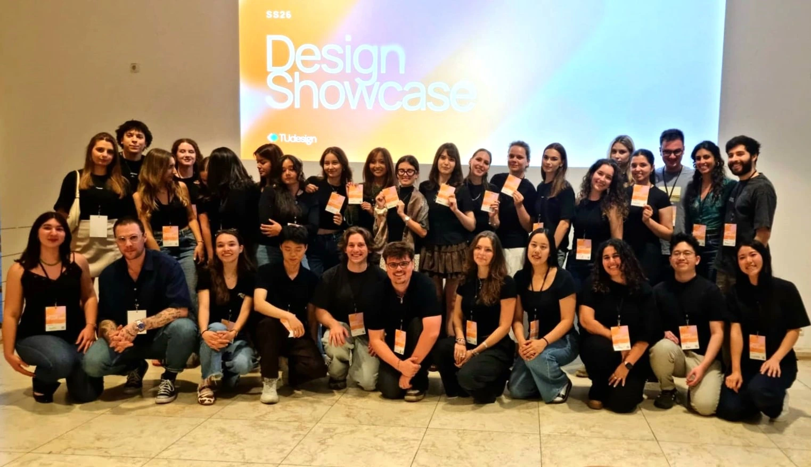
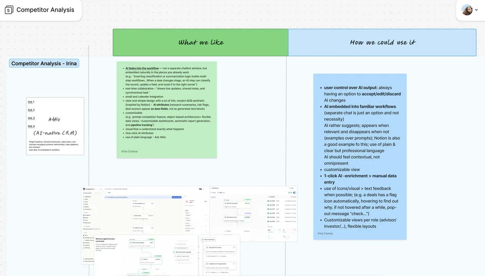
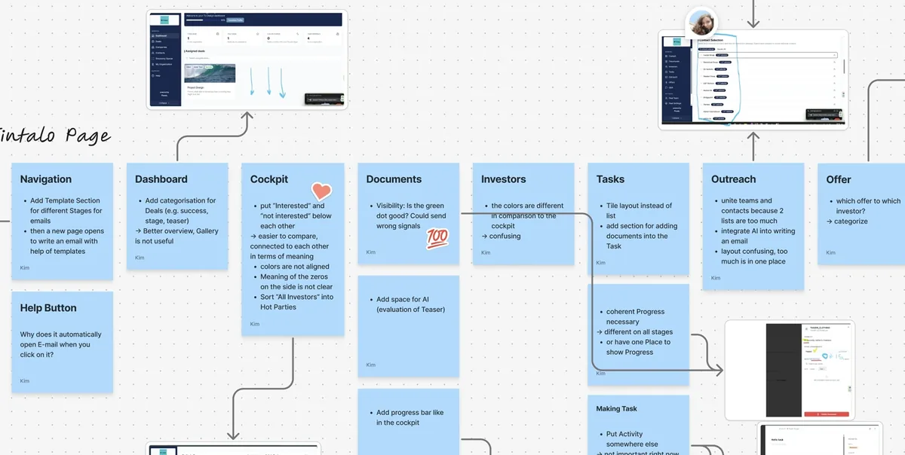
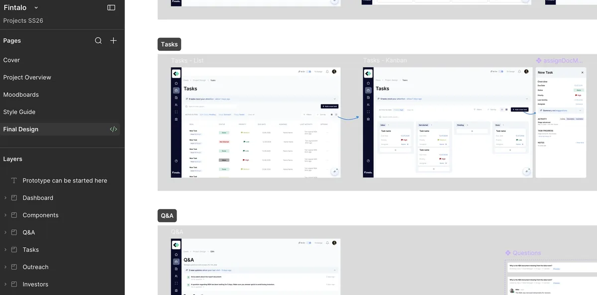

Fintalo
| Neugestaltung einer KI-nativen M&A-Plattform
Was ich gemacht habe
- Die UX/UI von Fintalo, einer KI-nativen M&A-Deal-Management-Plattform, gemeinsam mit meinem Team vom TUDesign Studierendenclub neu gestaltet
- Eine Wettbewerbsanalyse KI-nativer CRM-Tools durchgeführt, um Prinzipien dafür zu definieren, wie KI im Produkt sichtbar werden sollte
- Das Design in mehreren strukturierten Feedback-Runden mit dem Fintalo-Team iteriert
Fintalos Website besuchen

Die Herausforderung
M&A-Berater*innen managen komplexe, mehrstufige Deals, die von der Pitch-Phase bis zum Abschluss reichen und sich oft über E-Mails, Tabellen und getrennte Tools verteilen. Fintalo brauchte eine Oberfläche, die all diese Aktivitäten übersichtlich abbildet und KI-Unterstützung so einführt, dass sie sich integriert anfühlt statt wie ein separater Chatbot.
Die Lösung
Wir haben die Plattform um die Ansichten Dashboard, Cockpit, Documents, Investors, Tasks und Outreach strukturiert und den Berater*innen so einen klaren, stufenbasierten Weg gegeben, jeden Deal zu navigieren. KI erscheint kontextabhängig innerhalb dieser Ansichten durch Vorschläge, One-Click-Anreicherung sowie Annehmen-, Bearbeiten- oder Verwerfen-Steuerungen und unterstützt die Berater*innen, ohne ihre Aufmerksamkeit einzufordern.


